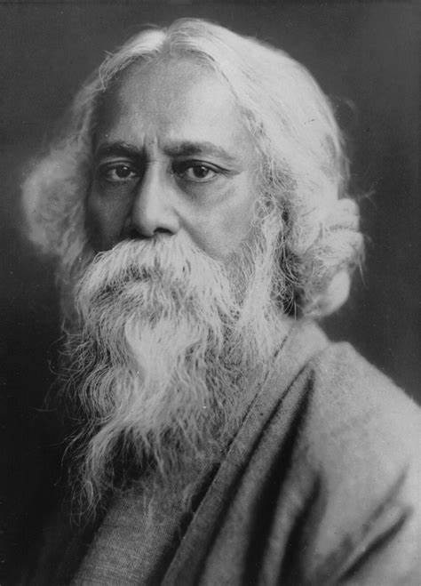

Rabindranath Tagore
1861-1941
The youngest of 13 surviving children, Tagore (nicknamed "Rabi") was born on 7 May 1861 in the Jorasanko mansion in Calcutta, the son of Debendranath Tagore (1817–1905) and Sarada Devi (1830–1875)
Rabindranath Tagore(7 may 1861-8 august 1941)
was a bengali poey,writer,playwright,composer,philosopher,social reformer and painter.He reshaped Bengali literature and music as well as Indian art with contextual modernism in the late 19th and early 20th centuries.Author of thr "profoundly sensitive,freshand beautiful" poetry of Gitanjali,he became in 1913 the first non-European and the first lyricist to win the Nobel Prize in Literature.Tagore's poetic songs were viewed as spiritual and mercurial;however his :elegant prose and magical poetry"remain largely unknown outside Bengal.
He was a fellow of the Royal Asiatic Society. Referred to as "the Bard of Bengal", Tagore was known by sobriquets: Gurudeb, Kobiguru, Biswokobi.A Bengali Brahmin from Calcutta with ancestral gentry roots in Burdwan district and Jessore, Tagore wrote poetry as an eight-year-old. At the age of sixteen, he released his first substantial poems under the pseudonym Bhānusiṃha ("Sun Lion"), which were seized upon by literary authorities as long-lost classics. By 1877 he graduated to his first short stories and dramas, published under his real name. As a humanist, universalist, internationalist, and ardent critic of nationalism, he denounced the British Raj and advocated independence from Britain. As an exponent of the Bengal Renaissance, he advanced a vast canon that comprised paintings, sketches and doodles, hundreds of texts, and some two thousand songs; his legacy also endures in his founding of Visva-Bharati University.
He was a fellow of the Royal Asiatic Society. Referred to as "the Bard of Bengal", Tagore was known by sobriquets: Gurudeb, Kobiguru, Biswokobi.A Bengali Brahmin from Calcutta with ancestral gentry roots in Burdwan district and Jessore, Tagore wrote poetry as an eight-year-old. At the age of sixteen, he released his first substantial poems under the pseudonym Bhānusiṃha ("Sun Lion"), which were seized upon by literary authorities as long-lost classics. By 1877 he graduated to his first short stories and dramas, published under his real name. As a humanist, universalist, internationalist, and ardent critic of nationalism, he denounced the British Raj and advocated independence from Britain. As an exponent of the Bengal Renaissance, he advanced a vast canon that comprised paintings, sketches and doodles, hundreds of texts, and some two thousand songs; his legacy also endures in his founding of Visva-Bharati University.